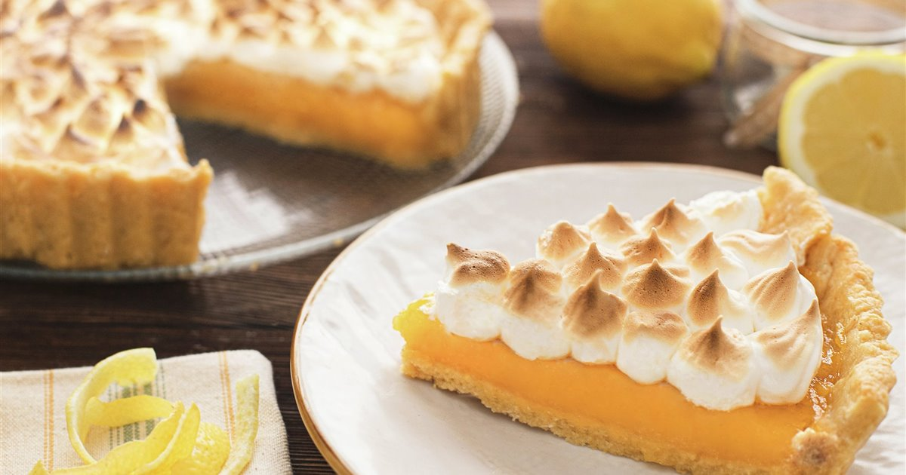
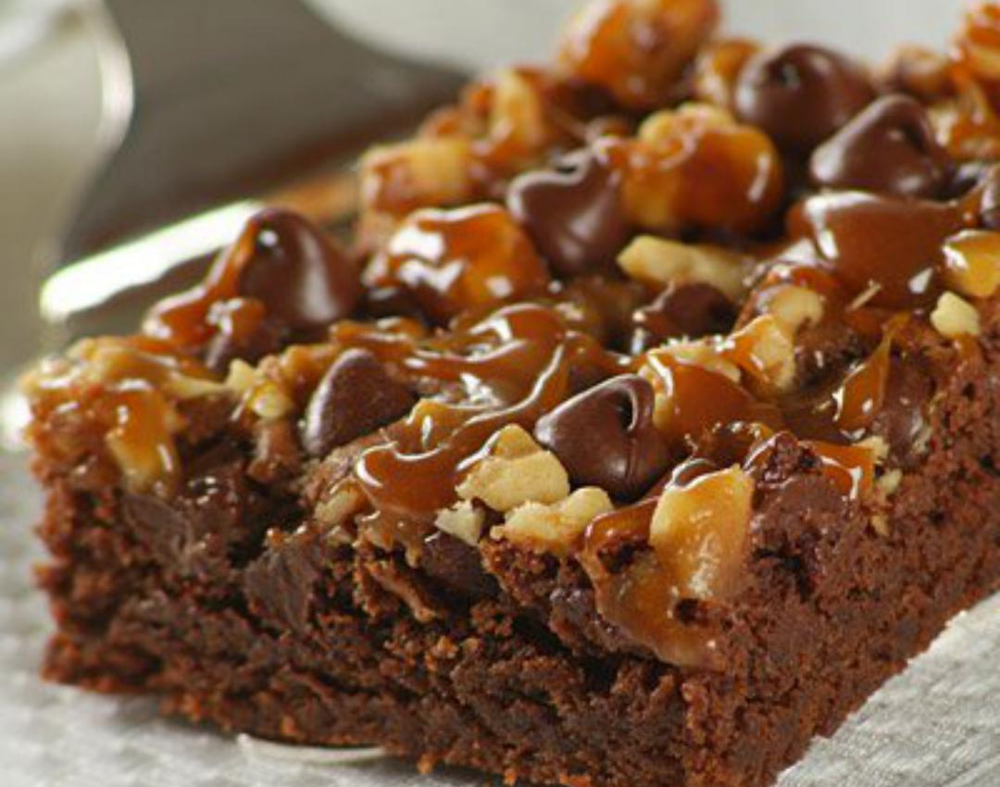
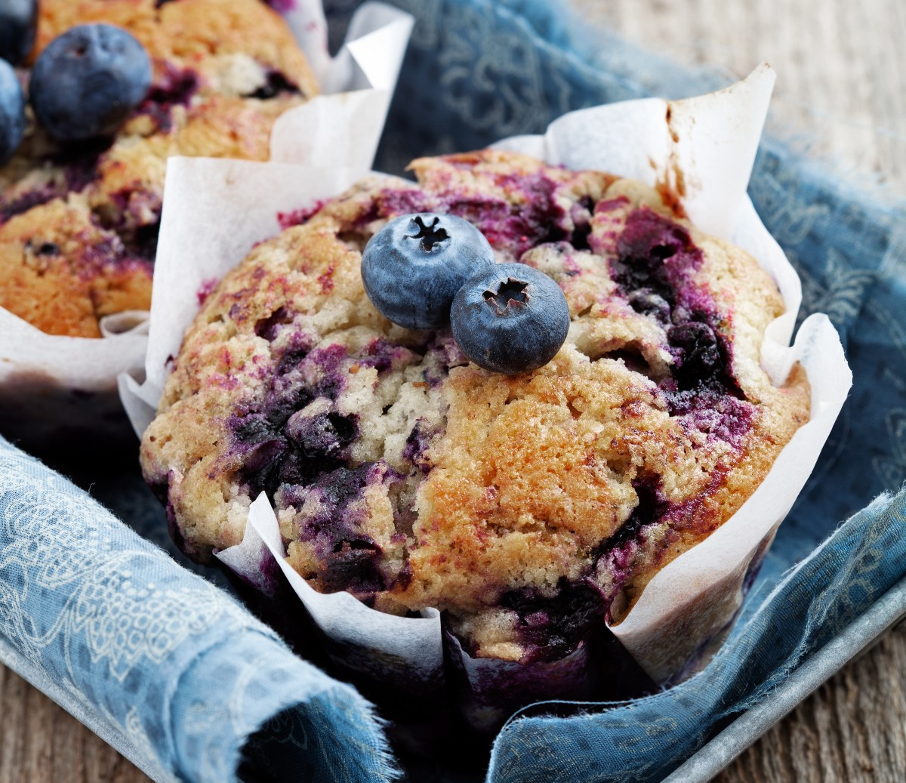
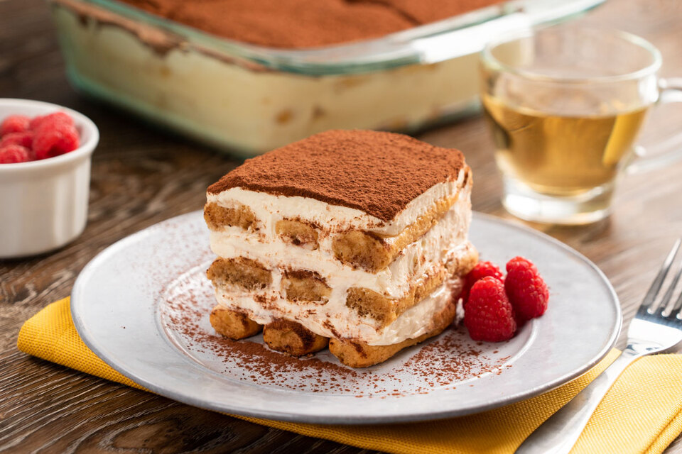
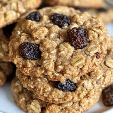

Descripción:
Una tarta fresca con una base crujiente, relleno de limón cremoso y cubierto con merengue suave y dorado.
Perfecta para acompañar con un café o té.
Ingredientes:
1 base de masa quebrada,
4 limones (jugo y ralladura),
200 g de azúcar,
3 huevos,
100 g de mantequilla,
200 g de azúcar glas (para el merengue),
3 claras de huevo,
1 cucharadita de maicena.
Pasos:
1. Precalentar el horno a 180°C.
2. Coloca la base de masa quebrada en un molde para tartas y hornéala
durante 10 minutos.
3. En un bol, bate los huevos con el azúcar, el jugo y la ralladura de los limones, y la maicena.
4. Cocina
la mezcla a fuego lento hasta que espese, luego agrega la mantequilla y mezcla bien.
5. Vierte el relleno de limón sobre la base de
la tarta y hornea 20 minutos.
6. Bate las claras a punto de nieve y añade el azúcar glas poco a poco.
7. Cubre la tarta con el
merengue y hornéala durante 10 minutos hasta que esté dorado.

Descripción:
Un pastel húmedo de chocolate con trozos de nueces que se derriten en cada bocado.
Ingredientes:
200 g de chocolate negro,
100 g de mantequilla,
200 g de azúcar,
3 huevos,
100 g de harina,
50 g de nueces picadas,
1 cucharadita de esencia de vainilla.
Pasos:
1. Precalentar el horno a 180°C.
2. Derretir el chocolate y la mantequilla en un recipiente al baño maría.
3. Batir los huevos con el azúcar y la esencia de vainilla hasta que estén espumosos.
4. Agregar el chocolate derretido a la mezcla de huevos y
azúcar, y luego incorporar la harina.
5. Añadir las nueces picadas.
6. Verter la mezcla en un molde engrasado y hornear durante 20-25 minutos.

Descripción:
Suaves y esponjosos muffins con arándanos frescos, perfectos para un desayuno o merienda.
Ingredientes:
250 g de harina,
100 g de azúcar,
1 huevo,
120 ml de leche,
80 g de mantequilla derretida,
150 g de arándanos frescos,
1 cucharadita de polvo de hornear,
1 pizca de sal.
Pasos:
1. Precalentar el horno a 190°C y preparar un molde para muffins con papelitos.
2. En un bol, mezclar la harina, el polvo de
hornear, la sal y el azúcar.
3. En otro bol, batir el huevo, la leche y la mantequilla derretida.
4. Verter los ingredientes húmedos sobre los secos
y mezclar suavemente.
5. Incorporar los arándanos.
6. Distribuir la masa en los moldes y hornear durante 20-25 minutos.

Descripción:
Un delicioso postre italiano a base de capas de bizcochos empapados en café y mascarpone cremoso.
Ingredientes:
250 g de queso mascarpone,
2 yemas de huevo,
100 g de azúcar,
200 ml de café expreso,
200 g de bizcochos de soletilla,
100 ml de nata para montar,
Cacao en polvo para decorar.
Pasos:1. Batir las yemas con el azúcar hasta obtener una crema suave.
2. Añadir el mascarpone a la mezcla de yemas y mezclar bien.
3. Montar la nata y añadirla suavemente a la mezcla de mascarpone.
4. Empapar los bizcochos de soletilla en el café y colocar una capa en el
fondo de un recipiente.
5. Cubrir con una capa de la crema de mascarpone.
6. Repetir las capas y terminar con una capa de crema.
7. Refrigerar durante 4 horas y espolvorear con cacao antes de servir.

Descripción:
Galletas crujientes con avena y pasas, ideales para acompañar un té o café en la tarde.
Ingredientes:
150 g de mantequilla,
100 g de azúcar moreno,
100 g de azúcar blanco,
1 huevo, 150 g de avena,
150 g de harina,
100 g de pasas,
1 cucharadita de esencia de vainilla,
1 cucharadita de polvo de hornear,
1 pizca de sal.
Pasos:
1. Precalentar el horno a 180°C.
2. Batir la mantequilla con los azúcares hasta que esté cremosa.
3. Añadir el huevo y la esencia de vainilla, y mezclar bien.
4. Incorporar la avena, harina, polvo de hornear y sal, y mezclar hasta formar una masa.
5. Añadir las pasas y formar bolitas con la masa.
6. Colocar las bolitas en una bandeja para hornear y aplastarlas ligeramente.
7. Hornear durante 12-15 minutos.
